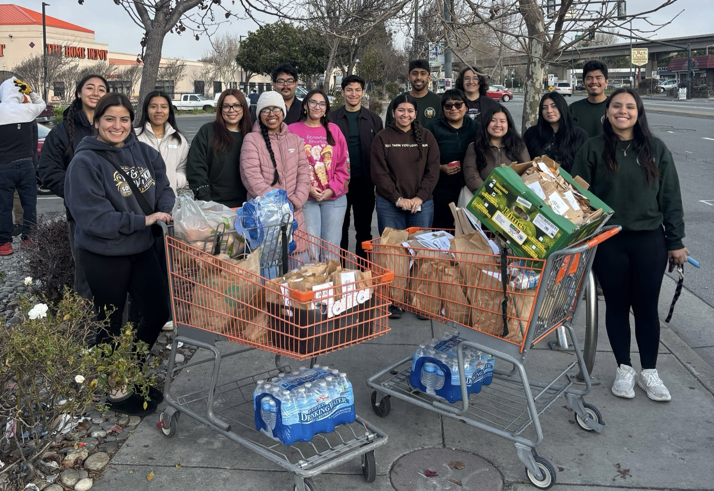
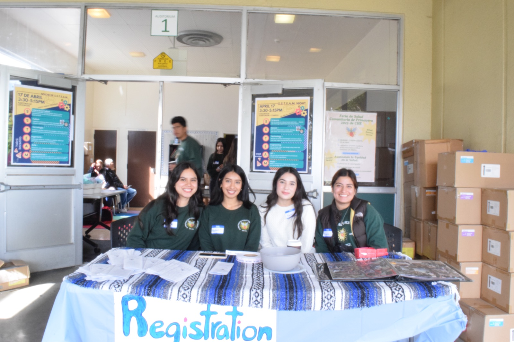

About CHE / Our work & our story
Health equity,
beyond campus.
For CHE, preparing for a career in health also means working alongside the communities we hope to serve.
Our work connects Berkeley students with East Bay neighbors, younger students, and professionals across healthcare.
Explore our work01 / Community outreach
Care begins
with connection.
Through Adelante Jornaleros Unidos en Acción (AJUA), CHE members bring health information in Spanish, lunches, and referrals to free or affordable clinics to East Bay day laborers.
The conversations connect health education with everyday concerns, including safety at work. CHE’s 2025–26 fundraising campaign highlights members distributing lunches and resource pamphlets in El Cerrito.
More on AJUA ↗
02 / Education & opportunity
Opening doors,
early.
The Minorities in Health Conference
Organized with fellow pre-health student groups, MIH brings high-school and undergraduate students together for workshops, mentorship, and panels with health professionals. It helps students explore careers while learning about health disparities.
The Community Health Fair
CHE interns turn health topics into engaging activities for elementary students. CHE’s campaign features the fair held in partnership with Lockwood STEAM Academy.
Explore CHE’s community work ↗
03 / The people who kept CHE going
A community
rebuilt together.
Four Chicanx/Latinx students founded CHE at Berkeley in 1976 to support students entering health professions and address the needs of underserved communities.
By late 1998, the group had become inactive. Melissa Cruz and Amanda Perez helped revive it with just five active members, according to CHE’s own account of its history.
That rebuilding is part of CHE’s story: students choosing to create the community they wanted to see, and leaving it for others to carry forward.
Read CHE’s history ↗The story continues with you.